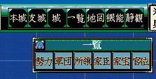

メイン画面のコマンドとは、プレイヤーやNPCの様々な命令に対応する概念です。
具体的には下記のイメージ画像を思い浮かばればわかりやすいでしょう。

プレイヤ操作によりコマンドが選択された瞬間にこのメソッドが実行されるイベントハンドラの
On_プレイヤコマンド発生直前《メイン画面》 を利用してください。
対として該当のコマンドが終了する直前に実行されるイベントハンドラの
On_プレイヤコマンド完了直前《メイン画面》 を利用してください。
この命令はコマンドの行動力を変更しますが、設定すると「天翔記アプリケーションを終了するまで」変更が有効となります。
今遊んでいるシナリオだけではなく、トップメニューに戻って新しくゲームを初めたとしても変更は有効となります。
TSMod.ini にて、コマンドの行動力として、
--========================================== -- TSMOD系特殊コマンド 必要行動力の設定 --========================================== ------------------------ 以下は必要行動力の設定 -- 最低値が1, 最大値が100まで設定が可能である。 -- コメントアウトした場合には、デフォルト値となる。 -- 「講義」に必要な行動値 cmd['all_gundan_need_koudou_value_kougii'] = 5 -- 「披露」に必要な行動値 cmd['all_gundan_need_koudou_value_hirouu'] = 50 -- 「編成」に必要な行動値 cmd['all_gundan_need_koudou_value_hensei'] = 5 -- 「徴兵」に必要な行動値 cmd['all_gundan_need_koudou_value_chohei'] = 10 -- 「登用」に必要な行動値 cmd['all_gundan_need_koudou_value_touyou'] = 5 -- 「褒美」に必要な行動値 cmd['all_gundan_need_koudou_value_houbii'] = 5 -- 「物資」に必要な行動値 cmd['all_gundan_need_koudou_value_busshi'] = 10 -- 「戦争」に必要な行動値 cmd['all_gundan_need_koudou_value_sensou'] = 30 -- 「同盟」に必要な行動値 cmd['all_gundan_need_koudou_value_doumei'] = 20 -- 「婚姻」に必要な行動値 cmd['all_gundan_need_koudou_value_koninn'] = 20 -- 「手切れ」に必要な行動値 cmd['all_gundan_need_koudou_value_tegire'] = 20 -- 「脅迫」に必要な行動値 cmd['all_gundan_need_koudou_value_kyohak'] = 20 -- 「朝廷」に必要な行動値 cmd['all_gundan_need_koudou_value_chotei'] = 20 -- 「内応」に必要な行動値 cmd['all_gundan_need_koudou_value_naiouu'] = 10 -- 「謀略」に必要な行動値 cmd['all_gundan_need_koudou_value_bourya'] = 10 -- 「評定」に必要な行動値 cmd['all_gundan_need_koudou_value_hyoujo'] = 20 -- 「軍団→任命」に必要な行動値 cmd['all_gundan_need_koudou_value_gunnin'] = 20 -- 「軍団→分配・合流・再任」に必要な行動値 cmd['all_gundan_need_koudou_value_gunsub'] = 10 -- 「内政・訓練・昇進」に必要な行動値 cmd['all_gundan_need_koudou_value_5ningu'] = 5
というものが定義されています。
この関数は、この数値をリアルタイムに変更できるものとなります。
特定のシナリオ限定で変更、あるいは、特定の年、特定の大名、特定の能力の際にだけ変更しても良いでしょう。
以下のようなことをするだけであれば、簡単です。
ただしこのようなことをするだけであれば、TSMod.ini あるいは TSModEx.ini を編集すればよいでしょう。
一度変更すると、アプリケーションを変更するまではずっと有効となります。
よって元へと戻す必要があるのであれば、元の値の保存処理や、元の値への復元処理が必要となることでしょう。
「メイン画面 - コマンド」に関する主な所は以上となります。 詳しくは「コマンド情報型.h」や「コマンド情報列挙.h」などを参照してください。